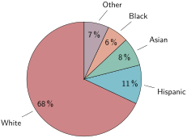
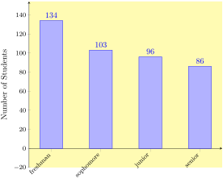
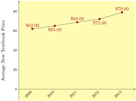
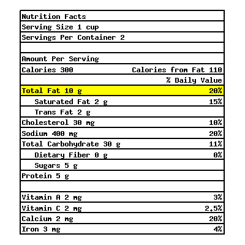
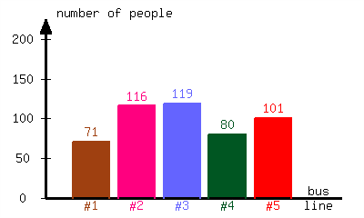
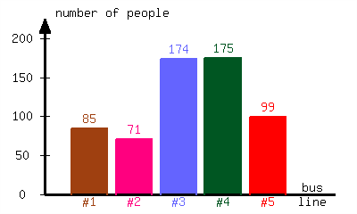
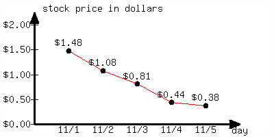
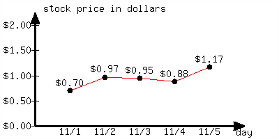

Percent-related problems arise in everyday life. This section reviews some basic calculations that can be made with percentages.
FigureA.4.1.Alternative Video Lesson
SubsectionA.4.1Converting Percents, Decimals, and English
In many situations when translating from English to math, the word “of” translates as multiplication. Also the word “is” (and many similar words related to “to be”) translates to an equals sign. For example:
\begin{align*}
\text{One third }\amp\text{of thirty is ten.}\\
\frac{1}{3}\amp\cdot30=10
\end{align*}
Here is another example, this time involving a percentage. We know that “\(2\) is \(50\%\) of \(4\text{,}\)” so we can say:
\begin{align*}
2\amp\text{ is } 50\% \text{ of } 4\\
2\amp= 0.5\cdot4
\end{align*}
ExampleA.4.2.
Translate each statement involving percents below into an equation. Define any variables used. (Solving these equations is an exercise).
How much is \(30\%\) of \(\$24.00\text{?}\)
\(\$7.20\) is what percent of \(\$24.00\text{?}\)
\(\$7.20\) is \(30\%\) of how much money?
Explanation.
Each question can be translated from English into a math equation by reading it slowly and looking for the right signals.
The word “is” means about the same thing as the equals sign. “How much” is a question phrase, and we can let \(x\) be the unknown amount (in dollars). The word “of” translates to multiplication, as discussed earlier. So we have:
SubsectionA.4.2Setting up and Solving Percent Equations
An important skill for solving percent-related problems is to boil down a complicated word problem into a simple form like “\(2\) is \(50\%\) of \(4\text{.}\)” Let’s look at some further examples.
ExampleA.4.4.
In Fall 2016, Portland Community College had \(89{,}900\) enrolled students. According to Figure 5, how many Black students were enrolled at PCC in Fall 2016?

FigureA.4.5.Racial breakdown of PCC students in Fall 2016
Explanation.
After reading this word problem and the chart, we can translate the problem into “what is \(6\%\) of \(89{,}900\text{?}\)” Let \(x\) be the number of Black students enrolled at PCC in Fall 2016. We can set up and solve the equation:
There was not much “solving” to do, since the variable we wanted to isolate was already isolated.
As of Fall 2016, Portland Community College had \(5394\) Black students. Note: this is not likely to be perfectly accurate, because the numbers we started with (\(89{,}900\) enrolled students and \(6\%\)) appear to be rounded.
ExampleA.4.6.
The bar graph in Figure 7 displays how many students are in each class at a local high school. According to the bar graph, what percentage of the school’s student population is freshman?

FigureA.4.7.Number of students at a high school by class
Approximately \(31.98\%\) of the school’s student population is freshman.
RemarkA.4.8.
When solving equations that do not have context we state the solution set. However, when solving an equation or inequality that arises in an application problem (such as the context of the high school in Example 6), it makes more sense to summarize our result with a sentence, using the context of the application. This allows us to communicate the full result, including appropriate units.
ExampleA.4.9.
Carlos just received his monthly paycheck. His gross pay (the amount before taxes and related things are deducted) was \(\$2{,}346.19\text{,}\) and his total tax and other deductions was \(\$350.21\text{.}\) The rest was deposited directly into his checking account. What percent of his gross pay went into his checking account?
Explanation.
Train yourself to read the word problem and not try to pick out numbers to substitute into formulas. You may find it helps to read the problem over to yourself three or more times before you attempt to solve it. There are three dollar amounts to discuss in this problem, and many students fall into a trap of using the wrong values in the wrong places. There is the gross pay, the amount that was deducted, and the amount that was deposited. Only two of these have been explicitly written down. We need to use subtraction to find the dollar amount that was deposited:
Approximately \(85.07\%\) of his gross pay went into his checking account.
CheckpointA.4.10.
Alexis sells cars for a living, and earns \(28\%\) of the dealership’s sales profit as commission. In a certain month, she plans to earn \(\$2200\) in commissions. How much total sales profit does she need to bring in for the dealership?
Alexis needs to bring in in sales profit.
Explanation.
Be careful that you do not calculate \(28\%\) of \(\$2200\text{.}\) That might be what a student would do who doesn’t thoroughly read the question. If you have ever trained yourself to quickly find numbers in word problems and substitute them into formulas, you must unlearn this. The issue is that \(\$2200\) is not the dealership’s sales profit, and if you mistakenly multiply \(0.28\cdot2200=616\text{,}\) then \(\$616\) makes no sense as an answer to this question. How could Alexis bring in only \(\$616\) of sales profit, and earn \(\$2200\) in commission?
We can translate the problem into “\(\$2200\) is \(28\%\) of what?” Letting \(x\) be the sales profit for the dealership (in dollars), we can write and solve the equation:
, the average cost of a new college textbook has been increasing. Find the percentage of increase from 2009 to 2013.

FigureA.4.12.Average New Textbook Price from 2009 to 2013
Explanation.
The actual amount of increase from 2009 to 2013 was \(79-62=17\text{,}\) dollars. We need to answer the question “\(\$17\) is what percent of \(\$62\text{?}\)” Note that we are comparing the \(17\) to \(62\text{,}\) not to \(79\text{.}\) In these situations where one amount is the earlier amount, the earlier original amount is the one that represents \(100\%\text{.}\) Let \(P\) represent the percent of increase. We can set up and solve the equation:
\begin{align*}
\pinover{17}{\$17}\amp\pinover{=}{is}\pinover{P}{what\ percent}\pinover{\cdot}{of}\pinover{62}{\$62}\\
17\amp=62P\\
\divideunder{17}{62}\amp=\divideunder{62P}{62}\\
0.2742\amp\approx P
\end{align*}
From 2009 to 2013, the average cost of a new textbook increased by approximately \(27.42\%\text{.}\)
CheckpointA.4.13.
Last month, a full tank of gas for a car you drive cost you \(\$40.00\text{.}\) You hear on the news that gas prices have risen by \(12\%\text{.}\) By how much, in dollars, has the cost of a full tank gone up?
A full tank of gas now costs more than it did last month.
Explanation.
Let \(x\) represent the amount of increase. We can set up and solve the equation:
A full tank now costs \(\$4.80\) more than it did last month.
ExampleA.4.14.
Enrollment at your neighborhood’s elementary school two years ago was \(417\) children. After a \(15\%\) increase last year and a \(15\%\) decrease this year, what’s the new enrollment?
Explanation.
It is tempting to think that increasing by \(15\%\) and then decreasing by \(15\%\) would bring the enrollment right back to where it started. But the \(15\%\) decrease applies to the enrollment after it had already increased. So that \(15\%\) decrease is going to translate to more students lost than were gained.
Using \(100\%\) as corresponding to the enrollment from two years ago, the enrollment last year was \(100\%+15\%=115\%\) of that. But then using \(100\%\) as corresponding to the enrollment from last year, the enrollment this year was \(100\%-15\%=85\%\) of that. So we can set up and solve the equation
We would round and report that enrollment is now \(408\) students. (The percentage rise and fall of \(15\%\) were probably rounded in the first place, which is why we did not end up with a whole number.)
ExercisesA.4.3Exercises
Review and Warmup.
1.
Write the following percentages as decimals.
\(\displaystyle{ 12\% = }\)
\(\displaystyle{ 53\% = }\)
Answer1.
\(0.12\)
Answer2.
\(0.53\)
Explanation.
To change a percentage to a decimal, we move the decimal point to the left twice.
\(\displaystyle{ 12\% = {0.12} }\)
\(\displaystyle{ 53\% = {0.53} }\)
2.
Write the following percentages as decimals.
\(\displaystyle{ 13\% = }\)
\(\displaystyle{ 59\% = }\)
Answer1.
\(0.13\)
Answer2.
\(0.59\)
Explanation.
To change a percentage to a decimal, we move the decimal point to the left twice.
\(\displaystyle{ 13\% = {0.13} }\)
\(\displaystyle{ 59\% = {0.59} }\)
3.
Write the following decimals as percentages.
\(\displaystyle{ 0.24 = }\)
\(\displaystyle{ 0.66 = }\)
Answer1.
\(24.0\%\)
Answer2.
\(66.0\%\)
Explanation.
To change a decimal to a percentage, we move the decimal point to the right twice.
\(0.24 = 24\%\)
\(0.66 = 66\%\)
4.
Write the following decimals as percentages.
\(\displaystyle{ 0.25 = }\)
\(\displaystyle{ 0.63 = }\)
Answer1.
\(25.0\%\)
Answer2.
\(63.0\%\)
Explanation.
To change a decimal to a percentage, we move the decimal point to the right twice.
\(0.25 = 25\%\)
\(0.63 = 63\%\)
5.
Write the following percentages as decimals.
\(\displaystyle{ 7\% = }\)
\(\displaystyle{ 70\% = }\)
\(\displaystyle{ 100\% = }\)
\(\displaystyle{ 700\% = }\)
Answer1.
\(0.07\)
Answer2.
\(0.7\)
Answer3.
\(1\)
Answer4.
\(7\)
Explanation.
To change a percentage to a decimal, we move the decimal to the left twice.
\(\displaystyle{ 7\% = {0.07} }\)
\(\displaystyle{ 70\% = {0.7} }\)
\(\displaystyle{ 100\% = 1 }\)
\(\displaystyle{ 700\% = {7} }\)
6.
Write the following percentages as decimals.
\(\displaystyle{ 7\% = }\)
\(\displaystyle{ 70\% = }\)
\(\displaystyle{ 100\% = }\)
\(\displaystyle{ 700\% = }\)
Answer1.
\(0.07\)
Answer2.
\(0.7\)
Answer3.
\(1\)
Answer4.
\(7\)
Explanation.
To change a percentage to a decimal, we move the decimal to the left twice.
\(\displaystyle{ 7\% = {0.07} }\)
\(\displaystyle{ 70\% = {0.7} }\)
\(\displaystyle{ 100\% = 1 }\)
\(\displaystyle{ 700\% = {7} }\)
Exercise Group.
7.
Write the following decimals as percentages.
\(\displaystyle{ 0.08 = }\)
\(\displaystyle{ 0.8 = }\)
\(\displaystyle{ 8 = }\)
\(\displaystyle{ 1 = }\)
Answer1.
\(8.0\%\)
Answer2.
\(80.0\%\)
Answer3.
\(800.0\%\)
Answer4.
\(100.0\%\)
Explanation.
To change a decimal to a percentage, we move the decimal point to the right twice.
\(\displaystyle{ 0.08 = 8\% }\)
\(\displaystyle{ 0.8 = 80\% }\)
\(\displaystyle{ 8 = 800\% }\)
\(\displaystyle{ 1 = 100\% }\)
8.
Write the following decimals as percentages.
\(\displaystyle{ 0.09 = }\)
\(\displaystyle{ 0.9 = }\)
\(\displaystyle{ 9 = }\)
\(\displaystyle{ 1 = }\)
Answer1.
\(9.0\%\)
Answer2.
\(90.0\%\)
Answer3.
\(900.0\%\)
Answer4.
\(100.0\%\)
Explanation.
To change a decimal to a percentage, we move the decimal point to the right twice.
\(\displaystyle{ 0.09 = 9\% }\)
\(\displaystyle{ 0.9 = 90\% }\)
\(\displaystyle{ 9 = 900\% }\)
\(\displaystyle{ 1 = 100\% }\)
9.
Write the following decimals as percentages.
\(\displaystyle{ 1.54 = }\)
\(\displaystyle{ 0.154 = }\)
\(\displaystyle{ 0.0154 = }\)
Answer1.
\(154.00\%\)
Answer2.
\(15.40\%\)
Answer3.
\(1.54\%\)
Explanation.
To change a decimal to a percentage, we move the decimal point to the right twice.
\(\displaystyle{ 1.54 = 154\% }\)
\(\displaystyle{ 0.154 = 15.4\% }\)
\(\displaystyle{ 0.0154 = 1.54\% }\)
10.
Write the following decimals as percentages.
\(\displaystyle{ 2.17 = }\)
\(\displaystyle{ 0.217 = }\)
\(\displaystyle{ 0.0217 = }\)
Answer1.
\(217.00\%\)
Answer2.
\(21.70\%\)
Answer3.
\(2.17\%\)
Explanation.
To change a decimal to a percentage, we move the decimal point to the right twice.
\(\displaystyle{ 2.17 = 217\% }\)
\(\displaystyle{ 0.217 = 21.7\% }\)
\(\displaystyle{ 0.0217 = 2.17\% }\)
11.
Write the following percentages as decimals.
\(\displaystyle{ 382\% = }\)
\(\displaystyle{ 38.2\% = }\)
\(\displaystyle{ 3.82\% = }\)
Answer1.
\(3.82\)
Answer2.
\(0.382\)
Answer3.
\(0.0382\)
Explanation.
To change a percentage to a decimal, we move the decimal to the left twice.
\(\displaystyle{ 382\% = {3.82} }\)
\(\displaystyle{ 38.2\% = {0.382} }\)
\(\displaystyle{ 3.82\% = {0.0382} }\)
12.
Write the following percentages as decimals.
\(\displaystyle{ 446\% = }\)
\(\displaystyle{ 44.6\% = }\)
\(\displaystyle{ 4.46\% = }\)
Answer1.
\(4.46\)
Answer2.
\(0.446\)
Answer3.
\(0.0446\)
Explanation.
To change a percentage to a decimal, we move the decimal to the left twice.
\(\displaystyle{ 446\% = {4.46} }\)
\(\displaystyle{ 44.6\% = {0.446} }\)
\(\displaystyle{ 4.46\% = {0.0446} }\)
Basic Percentage Calculation.
13.
\(2\%\) of \(560\) is .
Answer.
\(11.2\)
Explanation.
Method 1
We will use proportion to solve this problem. Assume \(2\%\) of \(560\) is \(x\text{,}\) so “\(2\) out of \(100\)” corresponds to “\(x\) out of \(560\)”.
We will use proportion to solve this problem. Assume \(8\%\) of \(660\) is \(x\text{,}\) so “\(8\) out of \(100\)” corresponds to “\(x\) out of \(660\)”.
We will use proportion to solve this problem. Assume \(50\%\) of \(760\) is \(x\text{,}\) so “\(50\) out of \(100\)” corresponds to “\(x\) out of \(760\)”.
We will use proportion to solve this problem. Assume \(20\%\) of \(860\) is \(x\text{,}\) so “\(20\) out of \(100\)” corresponds to “\(x\) out of \(860\)”.
We will use proportion to solve this problem. Assume \(710\%\) of \(960\) is \(x\text{,}\) so “\(710\) out of \(100\)” corresponds to “\(x\) out of \(960\)”.
We will use proportion to solve this problem. Assume \(460\%\) of \(160\) is \(x\text{,}\) so “\(460\) out of \(100\)” corresponds to “\(x\) out of \(160\)”.
We will use proportion to solve this problem. Assume \(13\%\) of \(x\) is \(33.8\text{,}\) so “\(13\) out of \(100\)” corresponds to “\(33.8\) out of \(x\)”.
We will use proportion to solve this problem. Assume \(71\%\) of \(x\) is \(255.6\text{,}\) so “\(71\) out of \(100\)” corresponds to “\(255.6\) out of \(x\)”.
We will use proportion to solve this problem. Assume \(4\%\) of \(x\) is \(18.4\text{,}\) so “\(4\) out of \(100\)” corresponds to “\(18.4\) out of \(x\)”.
We will use proportion to solve this problem. Assume \(9\%\) of \(x\) is \(50.4\text{,}\) so “\(9\) out of \(100\)” corresponds to “\(50.4\) out of \(x\)”.
We will use proportion to solve this problem. Assume \(420\%\) of \(x\) is \(2772\text{,}\) so “\(420\) out of \(100\)” corresponds to “\(2772\) out of \(x\)”.
We will use proportion to solve this problem. Assume \(250\%\) of \(x\) is \(1875\text{,}\) so “\(250\) out of \(100\)” corresponds to “\(1875\) out of \(x\)”.
\(9\) is approximately \(33.33\%\) of \(27\text{.}\)
Applications.
31.
A town has \(3000\) registered residents. Among them, \(38\%\) were Democrats, \(31\%\) were Republicans. The rest were Independents. How many registered Independents live in this town?
There are registered Independent residents in this town.
Answer.
\(930\)
Explanation.
It’s given there are \(38\%\) Democrats, \(31\%\) Republicans, and the rest are Independents. Now we can use subtraction to find the percentage of registered Independent residents:
So there are \(31\%\) Independents. Now this problem can be boiled down to this question: What is \(31\%\) of \(3000\text{?}\) We will show multiple methods to solve this problem.
Method 1
We will use proportion to solve this problem. Assume \(31\%\) of \(3000\) is \(x\text{,}\) so “\(31\) out of \(100\)” corresponds to “\(x\) out of \(3000\)”.
There are \(930\) registered Independent residents in this town.
32.
A town has \(3500\) registered residents. Among them, \(35\%\) were Democrats, \(39\%\) were Republicans. The rest were Independents. How many registered Independents live in this town?
There are registered Independent residents in this town.
Answer.
\(910\)
Explanation.
It’s given there are \(35\%\) Democrats, \(39\%\) Republicans, and the rest are Independents. Now we can use subtraction to find the percentage of registered Independent residents:
So there are \(26\%\) Independents. Now this problem can be boiled down to this question: What is \(26\%\) of \(3500\text{?}\) We will show multiple methods to solve this problem.
Method 1
We will use proportion to solve this problem. Assume \(26\%\) of \(3500\) is \(x\text{,}\) so “\(26\) out of \(100\)” corresponds to “\(x\) out of \(3500\)”.
There are \(910\) registered Independent residents in this town.
33.
Eric is paying a dinner bill of \({\$42.00}\text{.}\) Eric plans to pay \(11\%\) in tips. How much tip will Eric pay?
Eric will pay in tip.
Answer.
\(\$4.62\)
Explanation.
This problem can be boiled down to this question: What is \(11\%\) of \(42\text{?}\) We will show multiple methods to solve this problem.
Method 1
We will use proportion to solve this problem. Assume \(11\%\) of \(42\) is \(x\text{,}\) so “\(11\) out of \(100\)” corresponds to “\(x\) out of \(42\)”.
Amber is paying a dinner bill of \({\$45.00}\text{.}\) Amber plans to pay \(18\%\) in tips. How much tip will Amber pay?
Amber will pay in tip.
Answer.
\(\$8.10\)
Explanation.
This problem can be boiled down to this question: What is \(18\%\) of \(45\text{?}\) We will show multiple methods to solve this problem.
Method 1
We will use proportion to solve this problem. Assume \(18\%\) of \(45\) is \(x\text{,}\) so “\(18\) out of \(100\)” corresponds to “\(x\) out of \(45\)”.
Phil is paying a dinner bill of \({\$49.00}\text{.}\) Phil plans to pay \(15\%\) in tips. How much in total (including bill and tip) will Phil pay?
Phil will pay in total (including bill and tip).
Answer.
\(\$56.35\)
Explanation.
First, we need to find how much tip Phil paid. This problem can be boiled down to this question: What is \(15\%\) of \(49\text{?}\) We will show multiple methods to solve this problem.
Method 1
We will use proportion to solve this problem. Assume \(15\%\) of \(49\) is \(x\text{,}\) so “\(15\) out of \(100\)” corresponds to “\(x\) out of \(49\)”.
Phil will pay \({\$7.35}\) in tip. In total, he will pay \({\$49.00}+{\$7.35}={\$56.35}\text{.}\)
Phil will pay \({\$56.35}\) in total (including bill and tip).
36.
Kim is paying a dinner bill of \({\$21.00}\text{.}\) Kim plans to pay \(11\%\) in tips. How much in total (including bill and tip) will Kim pay?
Kim will pay in total (including bill and tip).
Answer.
\(\$23.31\)
Explanation.
First, we need to find how much tip Kim paid. This problem can be boiled down to this question: What is \(11\%\) of \(21\text{?}\) We will show multiple methods to solve this problem.
Method 1
We will use proportion to solve this problem. Assume \(11\%\) of \(21\) is \(x\text{,}\) so “\(11\) out of \(100\)” corresponds to “\(x\) out of \(21\)”.
Kim will pay \({\$2.31}\) in tip. In total, she will pay \({\$21.00}+{\$2.31}={\$23.31}\text{.}\)
Kim will pay \({\$23.31}\) in total (including bill and tip).
37.
A watch’s wholesale price was \({\$240.00}\text{.}\) The retailer marked up the price by \(35\%\text{.}\) What’s the watch’s new price (markup price)?
The watch’s markup price is .
Answer.
\(\$324.00\)
Explanation.
First, we need to find the amount of increase in price. It’s given that the watch’s price was marked up by \(35\%\) of its original price, \({\$240.00}\text{.}\)
The problem can be boiled down to this question: What is \(35\%\) of \(240\text{?}\) We will show multiple methods to solve this problem.
Method 1
We will use proportion to solve this problem. Assume \(35\%\) of \(240\) is \(x\text{,}\) so “\(35\) out of \(100\)” corresponds to “\(x\) out of \(240\)”.
The amount of price increase was \({\$84.00}\text{,}\) so the new price is \({\$240.00}+{\$84.00}={\$324.00}\text{.}\)
So the watch’s markup price is \({\$324.00}\text{.}\)
38.
A watch’s wholesale price was \({\$280.00}\text{.}\) The retailer marked up the price by \(30\%\text{.}\) What’s the watch’s new price (markup price)?
The watch’s markup price is .
Answer.
\(\$364.00\)
Explanation.
First, we need to find the amount of increase in price. It’s given that the watch’s price was marked up by \(30\%\) of its original price, \({\$280.00}\text{.}\)
The problem can be boiled down to this question: What is \(30\%\) of \(280\text{?}\) We will show multiple methods to solve this problem.
Method 1
We will use proportion to solve this problem. Assume \(30\%\) of \(280\) is \(x\text{,}\) so “\(30\) out of \(100\)” corresponds to “\(x\) out of \(280\)”.
The amount of price increase was \({\$84.00}\text{,}\) so the new price is \({\$280.00}+{\$84.00}={\$364.00}\text{.}\)
So the watch’s markup price is \({\$364.00}\text{.}\)
39.
In the past few seasons’ basketball games, Michele attempted \(130\) free throws, and made \(65\) of them. What percent of free throws did Michele make?
Michele made of free throws in the past few seasons.
Answer.
\(50\%\)
Explanation.
This problem can be boiled down to this question: \(65\) is what percent of \(130\text{?}\) We will show multiple methods to solve this problem.
Method 1
We will use proportion to solve this problem.
Assume \(65\) is \(x\%\) of \(130\text{,}\) so “\(x\) out of \(100\)” corresponds to “\(65\) out of \(130\)”.
So there are \(14\%\) Sting signatures. Now this problem can be boiled down to this question: What is \(14\%\) of \(1750\text{?}\) We will show multiple methods to solve this problem.
Method 1
We will use proportion to solve this problem. Assume \(14\%\) of \(1750\) is \(x\text{,}\) so “\(14\) out of \(100\)” corresponds to “\(x\) out of \(1750\)”.
So there are \(22\%\) Sting signatures. Now this problem can be boiled down to this question: What is \(22\%\) of \(1950\text{?}\) We will show multiple methods to solve this problem.
Method 1
We will use proportion to solve this problem. Assume \(22\%\) of \(1950\) is \(x\text{,}\) so “\(22\) out of \(100\)” corresponds to “\(x\) out of \(1950\)”.
There are \(429\) signatures by Sting in this collection.
45.
In the last election, \(69\%\) of a county’s residents, or \(8418\) people, turned out to vote. How many residents live in this county?
This county has residents.
Answer.
\(12200\)
Explanation.
This problem can be boiled down to this question: \(8418\) is \(69\%\) of what? We will show multiple methods to solve this problem.
Method 1
We will use proportion to solve this problem. Assume \(8418\) is \(69\%\) of \(x\text{,}\) so “\(69\) out of \(100\)” corresponds to “\(8418\) out of \(x\)”.
In the last election, \(55\%\) of a county’s residents, or \(9130\) people, turned out to vote. How many residents live in this county?
This county has residents.
Answer.
\(16600\)
Explanation.
This problem can be boiled down to this question: \(9130\) is \(55\%\) of what? We will show multiple methods to solve this problem.
Method 1
We will use proportion to solve this problem. Assume \(9130\) is \(55\%\) of \(x\text{,}\) so “\(55\) out of \(100\)” corresponds to “\(9130\) out of \(x\)”.
\(40.5\) grams of pure alcohol was used to produce a bottle of \(16.2\%\) alcohol solution. What is the weight of the solution in grams?
The alcohol solution weighs .
Answer.
\(250\ {\rm g}\)
Explanation.
This problem can be boiled down to this question: \(40.5\) is \(16.2\%\) of what? We will show multiple methods to solve this problem.
Method 1
We will use proportion to solve this problem. Assume \(40.5\) is \(16.2\%\) of \(x\text{,}\) so “\(16.2\) out of \(100\)” corresponds to “\(40.5\) out of \(x\)”.
The alcohol solution weighs \({250\ {\rm g}}\text{.}\)
48.
\(82.88\) grams of pure alcohol was used to produce a bottle of \(29.6\%\) alcohol solution. What is the weight of the solution in grams?
The alcohol solution weighs .
Answer.
\(280\ {\rm g}\)
Explanation.
This problem can be boiled down to this question: \(82.88\) is \(29.6\%\) of what? We will show multiple methods to solve this problem.
Method 1
We will use proportion to solve this problem. Assume \(82.88\) is \(29.6\%\) of \(x\text{,}\) so “\(29.6\) out of \(100\)” corresponds to “\(82.88\) out of \(x\)”.
The alcohol solution weighs \({280\ {\rm g}}\text{.}\)
49.
Shane paid a dinner and left \(16\%\text{,}\) or \({\$5.60}\text{,}\) in tips. How much was the original bill (without counting the tip)?
The original bill (not including the tip) was .
Answer.
\(\$35.00\)
Explanation.
This problem can be boiled down to this question: \(5.6\) is \(16\%\) of what? We will show multiple methods to solve this problem.
Method 1
We will use proportion to solve this problem. Assume \(5.6\) is \(16\%\) of \(x\text{,}\) so “\(16\) out of \(100\)” corresponds to “\(5.6\) out of \(x\)”.
The original bill (not including the tip) was \({\$35.00}\text{.}\)
50.
Kenji paid a dinner and left \(12\%\text{,}\) or \({\$4.56}\text{,}\) in tips. How much was the original bill (without counting the tip)?
The original bill (not including the tip) was .
Answer.
\(\$38.00\)
Explanation.
This problem can be boiled down to this question: \(4.56\) is \(12\%\) of what? We will show multiple methods to solve this problem.
Method 1
We will use proportion to solve this problem. Assume \(4.56\) is \(12\%\) of \(x\text{,}\) so “\(12\) out of \(100\)” corresponds to “\(4.56\) out of \(x\)”.
The original bill (not including the tip) was \({\$38.00}\text{.}\)
51.
Diane sells cars for a living. Each month, she earns \({\$1{,}400.00}\) of base pay, plus a certain percentage of commission from her sales.
One month, Diane made \({\$68{,}800.00}\) in sales, and earned a total of \({\$5{,}417.92}\) in that month (including base pay and commission). What percent commission did Diane earn?
Diane earned in commission.
Answer.
\(5.84\%\)
Explanation.
Diane’s pay is made up of base pay and commission. In that month, Diane earned a total of \({\$5{,}417.92}\text{,}\) with \({\$1{,}400.00}\) of base pay. This implies Diane earned \({\$5{,}417.92}-{\$1{,}400.00}={\$4{,}017.92}\) in commission, out of \({\$68{,}800.00}\) in sales.
Now the problem can be boiled down to this question: \(4017.92\) is what percent of \(68800\text{?}\) We will show multiple methods to solve this problem.
Method 1
We will use proportion to solve this problem.
Assume \(4017.92\) is \(x\%\) of \(68800\text{,}\) so “\(x\) out of \(100\)” corresponds to “\(4017.92\) out of \(68800\)”.
Emiliano sells cars for a living. Each month, he earns \({\$1{,}400.00}\) of base pay, plus a certain percentage of commission from his sales.
One month, Emiliano made \({\$73{,}300.00}\) in sales, and earned a total of \({\$4{,}485.93}\) in that month (including base pay and commission). What percent commission did Emiliano earn?
Emiliano earned in commission.
Answer.
\(4.21\%\)
Explanation.
Emiliano’s pay is made up of base pay and commission. In that month, Emiliano earned a total of \({\$4{,}485.93}\text{,}\) with \({\$1{,}400.00}\) of base pay. This implies Emiliano earned \({\$4{,}485.93}-{\$1{,}400.00}={\$3{,}085.93}\) in commission, out of \({\$73{,}300.00}\) in sales.
Now the problem can be boiled down to this question: \(3085.93\) is what percent of \(73300\text{?}\) We will show multiple methods to solve this problem.
Method 1
We will use proportion to solve this problem.
Assume \(3085.93\) is \(x\%\) of \(73300\text{,}\) so “\(x\) out of \(100\)” corresponds to “\(3085.93\) out of \(73300\)”.
The following is a nutrition fact label from a certain macaroni and cheese box.
The highlighted row means each serving of macaroni and cheese in this box contains \({9.6\ {\rm g}}\) of fat, which is \(12\%\) of an average person’s daily intake of fat. What’s the recommended daily intake of fat for an average person?
The recommended daily intake of fat for an average person is .
Answer.
\(80\ {\rm g}\)
Explanation.
This problem can be boiled down to this question: \(9.6\) is \(12\%\) of what? We will show multiple methods to solve this problem.
Method 1
We will use proportion to solve this problem. Assume \(9.6\) is \(12\%\) of \(x\text{,}\) so “\(12\) out of \(100\)” corresponds to “\(9.6\) out of \(x\)”.
The recommended daily intake of fat for an average person is \({80\ {\rm g}}\text{.}\)
54.
The following is a nutrition fact label from a certain macaroni and cheese box.

The highlighted row means each serving of macaroni and cheese in this box contains \({10\ {\rm g}}\) of fat, which is \(20\%\) of an average person’s daily intake of fat. What’s the recommended daily intake of fat for an average person?
The recommended daily intake of fat for an average person is .
Answer.
\(50\ {\rm g}\)
Explanation.
This problem can be boiled down to this question: \(10\) is \(20\%\) of what? We will show multiple methods to solve this problem.
Method 1
We will use proportion to solve this problem. Assume \(10\) is \(20\%\) of \(x\text{,}\) so “\(20\) out of \(100\)” corresponds to “\(10\) out of \(x\)”.
The recommended daily intake of fat for an average person is \({50\ {\rm g}}\text{.}\)
55.
A community college conducted a survey about the number of students riding each bus line available. The following bar graph is the result of the survey.

What percent of students ride Bus #1?
Approximately of students ride Bus #1.
Answer.
\(15\%\)
Explanation.
First, we find the total number of students who participated in this survey:
\(\displaystyle{ 71+116+119+80+101=487 }\)
Now, this problem can be boiled down to this question: \(71\) is what percent of \(487\text{?}\) We will show multiple methods to solve this problem.
Method 1
We will use proportion to solve this problem.
Assume \(71\) is \(x\%\) of \(487\text{,}\) so “\(x\) out of \(100\)” corresponds to “\(71\) out of \(487\)”.
A community college conducted a survey about the number of students riding each bus line available. The following bar graph is the result of the survey.

What percent of students ride Bus #1?
Approximately of students ride Bus #1.
Answer.
\(14\%\)
Explanation.
First, we find the total number of students who participated in this survey:
\(\displaystyle{ 85+71+174+175+99=604 }\)
Now, this problem can be boiled down to this question: \(85\) is what percent of \(604\text{?}\) We will show multiple methods to solve this problem.
Method 1
We will use proportion to solve this problem.
Assume \(85\) is \(x\%\) of \(604\text{,}\) so “\(x\) out of \(100\)” corresponds to “\(85\) out of \(604\)”.
Irene earned \({\$213.36}\) of interest from a mutual fund, which was \(0.84\%\) of his total investment. How much money did Irene invest into this mutual fund?
Irene invested in this mutual fund.
Answer.
\(\$25{,}400.00\)
Explanation.
This problem can be boiled down to this question: \(213.36\) is \(0.84\%\) of what? We will show multiple methods to solve this problem.
Method 1
We will use proportion to solve this problem. Assume \(213.36\) is \(0.84\%\) of \(x\text{,}\) so “\(0.84\) out of \(100\)” corresponds to “\(213.36\) out of \(x\)”.
Irene invested \({\$25{,}400.00}\) in this mutual fund.
58.
Farshad earned \({\$143.04}\) of interest from a mutual fund, which was \(0.48\%\) of his total investment. How much money did Farshad invest into this mutual fund?
Farshad invested in this mutual fund.
Answer.
\(\$29{,}800.00\)
Explanation.
This problem can be boiled down to this question: \(143.04\) is \(0.48\%\) of what? We will show multiple methods to solve this problem.
Method 1
We will use proportion to solve this problem. Assume \(143.04\) is \(0.48\%\) of \(x\text{,}\) so “\(0.48\) out of \(100\)” corresponds to “\(143.04\) out of \(x\)”.
Farshad invested \({\$29{,}800.00}\) in this mutual fund.
59.
A town has \(3400\) registered residents. Among them, there are \(1088\) Democrats and \(816\) Republicans. The rest are Independents. What percentage of registered voters in this town are Independents?
In this town, of all registered voters are Independents.
Answer.
\(44\%\)
Explanation.
Out of \(3400\) registered voters, there are \(1088\) Democrats and \(816\) Republicans. This implies there are \(3400-1088-816=1496\) Independents.
Now this problem can be boiled down to this question: \(1496\) is what percent of \(3400\text{?}\) We will show multiple methods to solve this problem.
Method 1
We will use proportion to solve this problem.
Assume \(1496\) is \(x\%\) of \(3400\text{,}\) so “\(x\) out of \(100\)” corresponds to “\(1496\) out of \(3400\)”.
In this town, \(44\%\) of all registered voters are Independents.
60.
A town has \(3900\) registered residents. Among them, there are \(1443\) Democrats and \(1287\) Republicans. The rest are Independents. What percentage of registered voters in this town are Independents?
In this town, of all registered voters are Independents.
Answer.
\(30\%\)
Explanation.
Out of \(3900\) registered voters, there are \(1443\) Democrats and \(1287\) Republicans. This implies there are \(3900-1443-1287=1170\) Independents.
Now this problem can be boiled down to this question: \(1170\) is what percent of \(3900\text{?}\) We will show multiple methods to solve this problem.
Method 1
We will use proportion to solve this problem.
Assume \(1170\) is \(x\%\) of \(3900\text{,}\) so “\(x\) out of \(100\)” corresponds to “\(1170\) out of \(3900\)”.
In this town, \(30\%\) of all registered voters are Independents.
Percent Increase/Decrease.
61.
The population of cats in a shelter decreased from \(180\) to \(144\text{.}\) What is the percentage decrease of the shelter’s cat population?
The percentage decrease is .
Answer.
\(20\%\)
Explanation.
To calculate the percentage increase/decrease, first we find the amount of increase/decrease by doing a simple subtraction calculation, and then we find the percentage increase/decrease.
In this problem, the amount of decrease is \(144-180=36\text{.}\)
Next, since we started with \(180\) cats, we need to ask: \(36\) is what percent of \(180\text{?}\)
Assume \(36\) is \(x\%\) of \(180\text{,}\) so “\(x\) out of \(100\)” corresponds to “\(36\) out of \(180\)”.
The percentage decrease of the shelter’s cat population is \(20\%\text{.}\)
Method 2
We will use the percentage formula to solve this problem.
This translation from English to may should help you remember the percentage formula.
\(2 \text{ is } 50\% \text{ of } 4 \Longleftrightarrow 2 = 0.5 \cdot 4\)
Let \(x\) be the unknown percentage, and let the decrease \(36\) be \(x\) (percent) of \(180\text{.}\) That means:
\(\begin{aligned}
36 \amp = x \cdot 180 \\
\frac{36}{180} \amp = \frac{x \cdot 180}{180} \\
0.2 \amp = x \\
20\% \amp = x \\
\end{aligned}\)
The percentage decrease of the shelter’s cat population is \(20\%\text{.}\)
Method 3
We first divide the “new number” by the “original number”:
\(\displaystyle{ \frac{144}{180} = 0.8 = 80\% }\)
So the new number is \(80\%\) of the original number, implying the percentage decrease is \(100\% - 80\% = 20\%\text{.}\)
The percentage decrease of the shelter’s cat population is \(20\%\text{.}\)
62.
The population of cats in a shelter decreased from \(200\) to \(190\text{.}\) What is the percentage decrease of the shelter’s cat population?
The percentage decrease is .
Answer.
\(5\%\)
Explanation.
To calculate the percentage increase/decrease, first we find the amount of increase/decrease by doing a simple subtraction calculation, and then we find the percentage increase/decrease.
In this problem, the amount of decrease is \(190-200=10\text{.}\)
Next, since we started with \(200\) cats, we need to ask: \(10\) is what percent of \(200\text{?}\)
Assume \(10\) is \(x\%\) of \(200\text{,}\) so “\(x\) out of \(100\)” corresponds to “\(10\) out of \(200\)”.
So the new number is \(95\%\) of the original number, implying the percentage decrease is \(100\% - 95\% = 5\%\text{.}\)
The percentage decrease of the shelter’s cat population is \(5\%\text{.}\)
63.
The population of cats in a shelter increased from \(13\) to \(29\text{.}\) What is the percentage increase of the shelter’s cat population?
The percentage increase is approximately .
Answer.
\(123.08\%\)
Explanation.
To calculate the percentage increase/decrease, first we find the amount of increase/decrease by doing a simple subtraction calculation, and then we find the percentage increase/decrease.
In this problem, the amount of increase is \(29-13\text{,}\) which is \(16\text{.}\)
Next, since we started with \(13\) cats, we need to ask: \(16\) is what percent of \(13\text{?}\)
Method 1
We will use proportion to solve this problem.
Assume \(16\) is \(x\%\) of \(13\text{,}\) so “\(x\) out of \(100\)” corresponds to “\(16\) out of \(13\)”.
So the new number is approximately \(223.08\%\) of the original number, implying the percentage increase is approximately \(223.08\% - 100\% = 123.08\%\text{.}\)
The percentage increase of the shelter’s cat population is approximately \(123.08\%\text{.}\)
64.
The population of cats in a shelter increased from \(21\) to \(32\text{.}\) What is the percentage increase of the shelter’s cat population?
The percentage increase is approximately .
Answer.
\(52.38\%\)
Explanation.
To calculate the percentage increase/decrease, first we find the amount of increase/decrease by doing a simple subtraction calculation, and then we find the percentage increase/decrease.
In this problem, the amount of increase is \(32-21\text{,}\) which is \(11\text{.}\)
Next, since we started with \(21\) cats, we need to ask: \(11\) is what percent of \(21\text{?}\)
Method 1
We will use proportion to solve this problem.
Assume \(11\) is \(x\%\) of \(21\text{,}\) so “\(x\) out of \(100\)” corresponds to “\(11\) out of \(21\)”.
So the new number is approximately \(152.38\%\) of the original number, implying the percentage increase is approximately \(152.38\% - 100\% = 52.38\%\text{.}\)
The percentage increase of the shelter’s cat population is approximately \(52.38\%\text{.}\)
65.
Last year, a small town’s population was \(580\text{.}\) This year, the population decreased to \(574\text{.}\) What is the percentage decrease?
The percentage decrease of the town’s population was approximately .
Answer.
\(1.03\%\)
Explanation.
To calculate the percentage increase/decrease, first we find the amount of increase/decrease by doing a simple subtraction calculation, and then we find the percentage increase/decrease.
In this problem, the amount of decrease is \(580-574=6\text{.}\)
Since the city’s population was initially \(580\text{,}\) we need to ask: \(6\) is what percent of \(580\text{?}\)
Method 1
We will use proportion to solve this problem.
Assume \(6\) is \(x\%\) of \(580\text{,}\) so “\(x\) out of \(100\)” corresponds to “\(6\) out of \(580\)”.
So the new number is \(98.97\%\) of the original number, implying the percentage decrease is \(100\% - 98.97\% = 1.03\%\text{.}\)
The percentage decrease of the town’s population was approximately \(1.03\%\text{.}\)
66.
Last year, a small town’s population was \(610\text{.}\) This year, the population decreased to \(608\text{.}\) What is the percentage decrease?
The percentage decrease of the town’s population was approximately .
Answer.
\(0.33\%\)
Explanation.
To calculate the percentage increase/decrease, first we find the amount of increase/decrease by doing a simple subtraction calculation, and then we find the percentage increase/decrease.
In this problem, the amount of decrease is \(610-608=2\text{.}\)
Since the city’s population was initially \(610\text{,}\) we need to ask: \(2\) is what percent of \(610\text{?}\)
Method 1
We will use proportion to solve this problem.
Assume \(2\) is \(x\%\) of \(610\text{,}\) so “\(x\) out of \(100\)” corresponds to “\(2\) out of \(610\)”.
So the new number is \(99.67\%\) of the original number, implying the percentage decrease is \(100\% - 99.67\% = 0.33\%\text{.}\)
The percentage decrease of the town’s population was approximately \(0.33\%\text{.}\)
67.
Your salary used to be \({\$37{,}000}\) per year.
You had to take a \(3\%\) pay cut. After the cut, your salary was per year.
Then, you earned a \(3\%\) raise. After the raise, your salary was per year.
Answer1.
\(\$35{,}890\)
Answer2.
\(\$36{,}966.70\)
Explanation.
Question 1
Your original salary was \({\$37{,}000}\) per year. The amount of cut was \(3\%\) of \({\$37{,}000}\text{.}\) There are two methods to find this amount.
We can use proportion. Let \(x\) dollars be the amount of decrease, then we have:
After the cut, your salary became \({\$37{,}000}-{\$1{,}110} = {\$35{,}890}\) dollars per year.
Question 2
Next, the amount of pay raise was \(3\%\) of \({\$35{,}890}\text{.}\) Notice that it’s incorrect to find \(3\%\) of \({\$37{,}000}\text{,}\) because the annual salary has changed from \({\$37{,}000}\) to \({\$35{,}890}\text{.}\)
We will first use proportion to find the amount of pay cut. Assume the amount of pay cut was \(x\) dollars. We have:
After the raise, your salary became \({\$35{,}890}+{\$1{,}076.70} = {\$36{,}966.70}\) per year.
After a cut and a raise of the same rate, your salary decreased! This is because the rate of cut was based on a bigger salary, while the rate of raise was based on a smaller salary (after the cut).
68.
Your salary used to be \({\$50{,}000}\) per year.
You had to take a \(4\%\) pay cut. After the cut, your salary was per year.
Then, you earned a \(4\%\) raise. After the raise, your salary was per year.
Answer1.
\(\$48{,}000\)
Answer2.
\(\$49{,}920\)
Explanation.
Question 1
Your original salary was \({\$50{,}000}\) per year. The amount of cut was \(4\%\) of \({\$50{,}000}\text{.}\) There are two methods to find this amount.
We can use proportion. Let \(x\) dollars be the amount of decrease, then we have:
After the cut, your salary became \({\$50{,}000}-{\$2{,}000} = {\$48{,}000}\) dollars per year.
Question 2
Next, the amount of pay raise was \(4\%\) of \({\$48{,}000}\text{.}\) Notice that it’s incorrect to find \(4\%\) of \({\$50{,}000}\text{,}\) because the annual salary has changed from \({\$50{,}000}\) to \({\$48{,}000}\text{.}\)
We will first use proportion to find the amount of pay cut. Assume the amount of pay cut was \(x\) dollars. We have:
After the raise, your salary became \({\$48{,}000}+{\$1{,}920} = {\$49{,}920}\) per year.
After a cut and a raise of the same rate, your salary decreased! This is because the rate of cut was based on a bigger salary, while the rate of raise was based on a smaller salary (after the cut).
69.
A house was bought two years ago at the price of \({\$360{,}000}\text{.}\) Each year, the house’s value decreased by \(6\%\text{.}\) What’s the house’s value this year?
The house’s value this year is .
Answer.
\(\$318{,}096\)
Explanation.
The house’s value two years ago was \({\$360{,}000}\text{.}\) After one year, the house’s value decreased by \(6\%\text{.}\)
The amount of decrease was \(6\%\) of \({\$360{,}000}\text{.}\) There are two methods to find this amount.
We can use proportion. Let \(x\) dollars be the amount of decrease, then we have:
Or we can use the percentage formula to find the amount of decrease:
\(\displaystyle{ 0.06 \cdot 338400 = 20304 }\)
After two years, the house’s value became \({\$338{,}400}-{\$20{,}304}={\$318{,}096}\text{.}\)
The house’s value this year is \({\$318{,}096}\text{.}\)
70.
A house was bought two years ago at the price of \({\$220{,}000}\text{.}\) Each year, the house’s value decreased by \(7\%\text{.}\) What’s the house’s value this year?
The house’s value this year is .
Answer.
\(\$190{,}278\)
Explanation.
The house’s value two years ago was \({\$220{,}000}\text{.}\) After one year, the house’s value decreased by \(7\%\text{.}\)
The amount of decrease was \(7\%\) of \({\$220{,}000}\text{.}\) There are two methods to find this amount.
We can use proportion. Let \(x\) dollars be the amount of decrease, then we have:
Or we can use the percentage formula to find the amount of decrease:
\(\displaystyle{ 0.07 \cdot 204600 = 14322 }\)
After two years, the house’s value became \({\$204{,}600}-{\$14{,}322}={\$190{,}278}\text{.}\)
The house’s value this year is \({\$190{,}278}\text{.}\)
71.
This line graph shows a certain stock’s price change over a few days.

From 11/1 to 11/5, what is the stock price’s percentage change?
From 11/1 to 11/5, the stock price’s percentage change was approximately .
Answer.
\(74.32\%\)
Explanation.
To calculate the percentage increase/decrease, first we find the amount of decrease/decrease, and then we find this increase/decrease is what percent of the original value.
In this problem, the stock’s price was \({\$1.48}\) on 11/1, and the price changed to \({\$0.38}\) on 11/5. Their difference was \({\$0.38}-{\$1.48}={-\$1.10}\text{,}\) so the amount of change was \({\$1.10}\text{.}\)
Next, we need to find: \({\$1.10}\) is what percent of the original value, \({\$1.48}\text{.}\)
Method 1
We will use proportion to solve this problem.
Assume \(1.1\) is \(x\%\) of \(1.48\text{,}\) so “\(x\) out of \(100\)” corresponds to “\(1.1\) out of \(1.48\)”.
So the new number is approximately \(174.32\%\) of the original number, implying the percentage change was approximately \(174.32\% - 100\% = 74.32\%\text{.}\)
From 11/1 to 11/5, the percentage change in the stock’s value was approximately \(74.32\%\text{.}\)
72.
This line graph shows a certain stock’s price change over a few days.

From 11/1 to 11/5, what is the stock price’s percentage change?
From 11/1 to 11/5, the stock price’s percentage change was approximately .
Answer.
\(67.14\%\)
Explanation.
To calculate the percentage increase/decrease, first we find the amount of decrease/decrease, and then we find this increase/decrease is what percent of the original value.
In this problem, the stock’s price was \({\$0.70}\) on 11/1, and the price changed to \({\$1.17}\) on 11/5. Their difference was \({\$1.17}-{\$0.70}={\$0.47}\text{,}\) so the amount of change was \({\$0.47}\text{.}\)
Next, we need to find: \({\$0.47}\) is what percent of the original value, \({\$0.70}\text{.}\)
Method 1
We will use proportion to solve this problem.
Assume \(0.47\) is \(x\%\) of \(0.7\text{,}\) so “\(x\) out of \(100\)” corresponds to “\(0.47\) out of \(0.7\)”.
So the new number is approximately \(167.14\%\) of the original number, implying the percentage change was approximately \(167.14\% - 100\% = 67.14\%\text{.}\)
From 11/1 to 11/5, the percentage change in the stock’s value was approximately \(67.14\%\text{.}\)